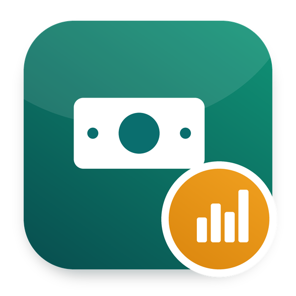

Salary grades and bands, compa-ratio, and merit cycles with department budgets turning the raises into contract versions
Part of Odoo Mates HR · Odoo 20 Community and Enterprise
A minimum, a midpoint and a maximum per grade, the job positions on their grade
The compa-ratio of every wage and where it sits in its band
Managers propose within the budget of their department, HR approves
Works with Odoo 20 Community and Odoo 20 Enterprise.
om_hr_base, mail.
Odoo Mates HR
The HR suite of Odoo Mates for Odoo 20: every module installs on its own, the links between them are bridges.
Support: odoomates@gmail.com